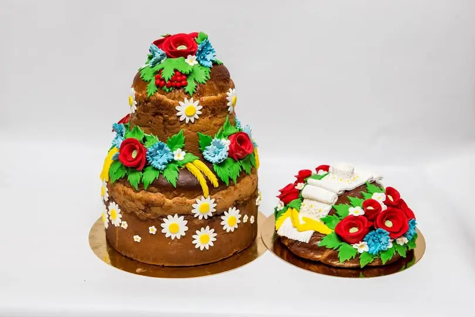

Український коровай – це більше, ніж просто хліб. Це символ традицій, гостинності й родинного тепла. Коли українці їдуть за кордон, вони часто беруть із собою коровай, щоб вразити друзів чи здивувати гостей. І ось, настає момент: в аеропорту чи на чужій кухні розгортається пухкий, пишний, прикрашений візерунками хліб. Іноземці, які звикли до багетів чи тостового хліба, дивляться на цей шедевр з круглими очима.
– Це що? Весільний торт?
– Ні, це коровай! – гордо відповідають українці.
Деколи здивування доходить до курйозів: уявіть митників, які думають, що це якась коштовність чи витвір мистецтва. А коли дізнаються, що це їстівне, то не можуть повірити, як можна так майстерно поєднати смак і красу.
І от, як тільки коровай з’являється на столі, починається справжній магічний момент. Його розрізають, і навіть ті, хто скептично ставиться до «просто хліба», пробують шматочок – і одразу закохуються. Бо український коровай – це не просто їжа, це емоція, яку неможливо забути.